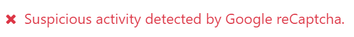

reCAPTCHA v3 en los formularios¶
reCAPTCHA de Google protege el sitio web contra el spam y ataques. Intenta distinguir entre solicitudes de humanos y bots.
Advertencia
Es posible que reCAPTCHA v3 no cumpla con las regulaciones locales de protección de datos.
Nota
reCAPTCHA v3 trabaja en segundo plano y no interrumpe a los visitantes del sitio web. Sin embargo, si el reconocimiento falla, los visitantes no podrán completar el formulario.
Ver también
Configuración¶
En Google¶
Ingrese a la página web de registro de reCAPTCHA. Inicie sesión o cree una cuenta de Google si es necesario.
En la página web de registro:
Póngale una Etiqueta al sitio web.
Deje el tipo de reCAPTCHA en Score based (v3).
Introduzca uno o mas Dominios (por ejemplo, example.com or subdomain.example.com).
En Plataforma Google Cloud, se seleccionará automáticamente un proyecto si ya se creó uno con la cuenta con la que inició sesión en Google. Si no es así, se creará uno automáticamente. Haga clic en Plataforma Google Cloud para que usted mismo pueda seleccionar un proyecto o para cambiar el nombre del poryecto que se creó de manera automática.
Acepte los términos y condiciones de servicio.
Haga clic en Enviar.

Aparecerá una nueva página con las claves generadas. Déjela abierta para más tarde, pues necesitará copiar las claves en Odoo después.
En Odoo¶
Desde el tablero de la base de datos, haga clic en Ajustes. Si es necesario, active la opción reCAPTCHA en la sección de Integraciones.
Advertencia
No desactive la función reCAPTCHA ni desinstale el módulo integración de Google reCAPTCHA, pues es posible que se eliminen otros módulos.
Abra la página de Google reCAPTCHA, copie la Clave del sitio y péguela en el campo Clave del sitio en Odoo.
Abra la página de Google reCAPTCHA, copie la Clave secreta y péguela en el campo Clave secreta en Odoo.
Cambie el Puntaje mínimo requerido (
0.5) predeterminado si es necesario, usando un valor entre1.0y0.0. Entre más alto sea el umbral, más difícil será aprobar el reCAPTCHA y viceversa.Haga clic en Guardar.
Todas las páginas que utilicen los snippets Formulario, Bloque de boletín, Ventana emergente del boletín y el formulario Pasos adicionales durante la finalización de la compra en el comercio electrónico, estarán protegidos con reCAPTCHA.
Nota
Si el reconocimiento falla, aparecerá el siguiente mensaje de error:
reCAPTCHA v3 es gratuito hasta 1 millón de valoraciones al mes.
Truco
La analítica y otros ajustes adicionales están disponibles en la página de administración de Google reCAPTCHA. Por ejemplo, puede recibir alertas por correo electrónico si Google detecta tráfico sospechoso en su sitio web o puede ver el porcentaje de solicitudes sospechosas, lo que puede ayudarle a determinar el puntaje mínimo adecuado.
Puede notificar a los visitantes que reCAPTCHA proteje un formulario. Para hacerlo, abra el editor del sitio web y vaya al formulario. Luego, haga clic en cualquier parte del formulario y en la pestaña Personalizar que se encuentra del lado derecho de la barra, conmute Mostrar política de reCAPTCHA que está en la sección de Formulario.